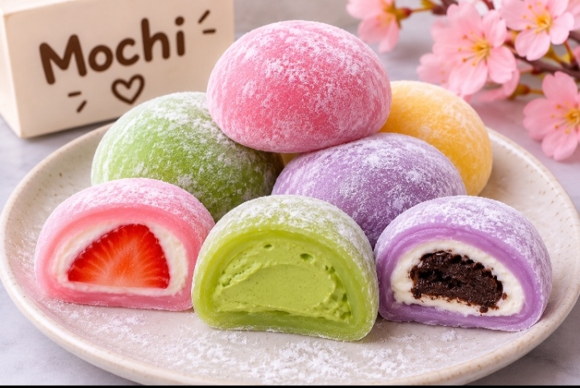
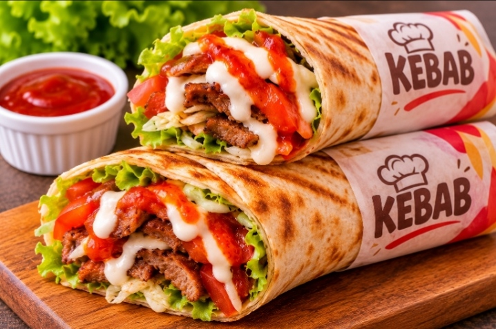
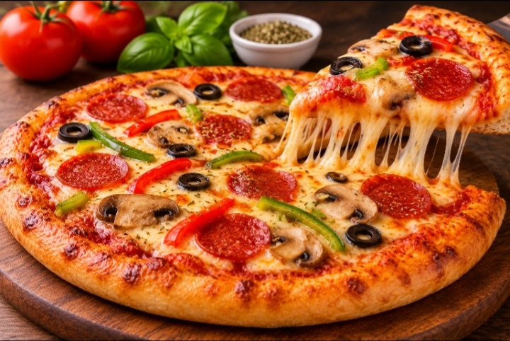

mochi

Udon adalah makanan khas Jepang yang berupa mi tebal.Udon terbuat dari tepung terigu, air, dan garam.Udon memiliki tekstur yang kenyal dan lembut.
Udon biasanya disajikan dengan kuah kaldu yang hangat.
Makanan ini sering ditambahkan daun bawang, telur, dan daging.Udon memiliki rasa yang gurih dan lezat.
Udon dapat disajikan dalam keadaan panas maupun dingin.
Banyak orang Jepang menyukai udon sebagai makanan sehari-hari.Udon mudah ditemukan di restoran Jepang.
Udon merupakan salah satu makanan Jepang yang terkenal di berbagai negara.
Makkah
Makkah adalah kota suci.Makkah berada di Arab Saudi.Makkah memiliki Ka'bah.Makkah tempat ibadah haji.Makkah kota umat Islam.Masjidil Haram ada di Makkah.Nabi Muhammad lahir di Makkah.Makkah sangat terkenal.Banyak orang berkunjung ke Makkah.Makkah sangat indah.
Kebab

Kebab adalah makanan khas Turki.Kebab terbuat dari daging.Kebab memiliki rasa yang lezat.Kebab biasanya dibungkus dengan roti.Kebab diberi tambahan sayuran.Kebab memiliki aroma yang harum.Kebab sering diberi saus.Kebab sangat populer di berbagai negara.Kebab cocok dimakan saat lapar.Banyak orang menyukai kebab.
Pizza

Pizza adalah makanan yang terkenal di Italia.Pizza berbentuk bulat.Pizza terbuat dari adonan tepung.Pizza diberi saus tomat.Pizza biasanya ditambahkan keju.Pizza memiliki rasa yang lezat.Pizza memiliki banyak pilihan topping.Pizza dipanggang menggunakan oven.Pizza disukai banyak orang.Pizza cocok dimakan bersama keluarga.
Hot Dog

Hot Dog adalah makanan populer di Amerika.Hot Dog terbuat dari roti panjang.Hot Dog berisi sosis.Hot Dog biasanya diberi saus.Hot Dog ditambahkan mustard.Hot Dog memiliki rasa gurih.Hot Dog mudah ditemukan.Hot Dog sering dijual di pinggir jalan.Hot Dog cocok dimakan saat santai.Banyak orang menyukai Hot Dog.